Dialogue posters
Poster 1: Injecting human insulin
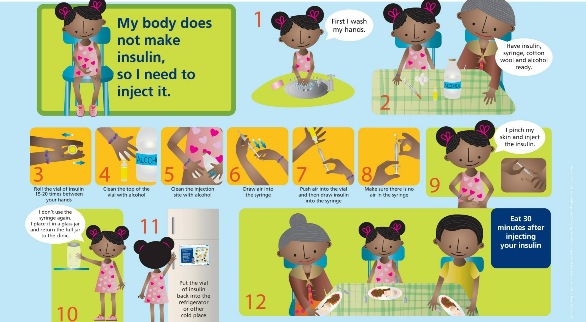
Knowing how to inject insulin is a primary skill to
acquire for a child living with diabetes. This poster
shows the step-by-step method for injection. In
addition, the poster provides the opportunity for
you to address some of the key issues associated
with being diagnosed with diabetes
Key messages for the child:
Your body cannot make insulin and therefore
you need to inject it.
Injecting insulin is necessary for you to be
healthy and will become part of your daily
routine for the rest of your life
You need to inject your insulin at certain times
of the day and in relation to when you take
your meals.
There are a few easy steps to follow for
injecting your insulin - learn them - they are
shown on this poster and on the handout you
will receive.
You need to use a syringe (and needle) to inject
your insulin. Do not use the syringe more than
once. Remember to throw the syringe away
in a safe place (for example a jar with a lid) to
ensure that you or another person do not get
hurt on the sharp needle.
Your insulin is a very important part of your
wellbeing. Insulin needs to be stored correctly.
Keep your insulin in a cool place like a
refrigerator (not the freezer). If you do not have
a refrigerator at home there are other ways to
store your insulin. I will show you how.
Poster 2: Why I need insulin
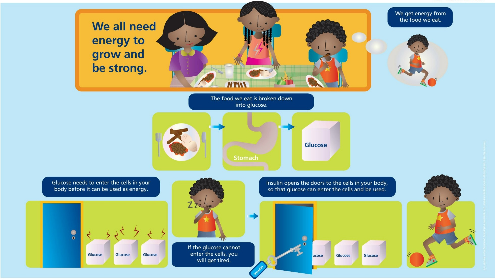
This dialogue poster is intended as an aid to
talking about how insulin works in the body, and
to make the child understand why he/she needs
insulin.
The poster shows a highly simplified presentation
of a very complex process. The poster aims to
ensure that insulin is understood by the child and
the family/caregiver as being natural and necessary
for the body to work. That insulin is a friend, even
if the thought of injecting it every day may be
overwhelming.
Key messages for the child:
You must inject the right amount of insulin.
I will show you how much insulin you must
take. Your insulin is measured in units, on your
syringe you can see the units
Sometimes you will need to adjust the amount
of insulin you take. At first this will be difficult
to work out, but you will learn and get much
better at it with time.
If you are going to be more physically active still shows signs of low- or high-blood sugar
you should contact me (doctor or nurse) to
discuss how to adjust the insulin levels.
Later you and your child will learn to use a
glucometer to measure blood sugar levels
this will help you judge how much insulin is
needed.
Poster 3: How much insulin should I take?
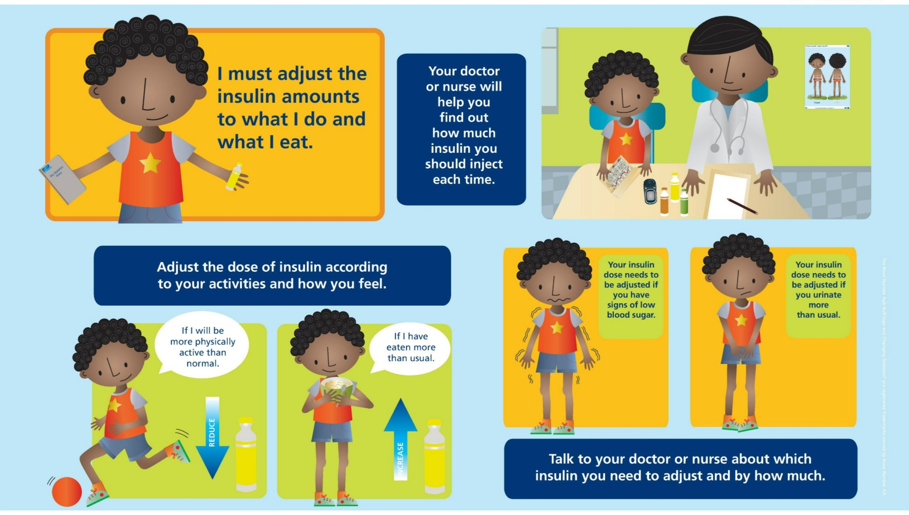
This poster is intended to help the nurse and child
talk about how the amount of insulin he/she injects
must match the amount of food and the level of
physical activity.
Key messages for the child:
You must inject the right amount of insulin.
I will show you how much insulin you must
take. Your insulin is measured in units, on your
syringe you can see the units.
Sometimes you will need to adjust the amount
of insulin you take. At first this will be difficult
to work out, but you will learn and get much
better at it with time.
If you are going to be more physically active than usual (e.g. you are planning to play a
soccer game with your friends) you should take
less insulin than your usual dose. [Nurse to
specify dose]
If you will be eating more than usual (e.g. you
are going to a party where you will eat cake
and sweets) you might need to take more
insulin than your usual dose. [Nurse to specify
dose]
You must never adjust your insulin dose (up or
down) by more than 2 units at a time.
Poster 4: Low blood sugar (hypoglycaemia) and how to recognise it
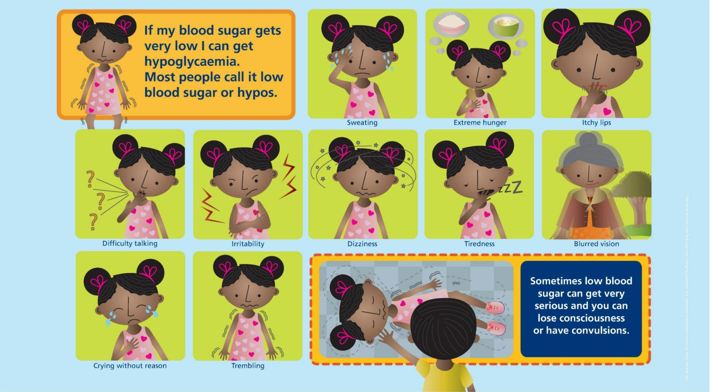
Learning to recognise low blood sugar is one of
the most critical lessons a child with diabetes can
learn. Particularly when the child is not living close
to a diabetes clinic.
Poster 4 uses the term low blood sugar rather than
hypoglycaemia, because it is easier to understand.
At a later stage the child should learn the proper
term, but at the very beginning, it is important to
explain diabetes using simple terms and concepts.
For many children in the CDiC programme, the
risk of dying from an unrecognised hypoglycaemic
episode is relatively high, as many live long
distances from a clinic.
For this reason it is critical that the children and
their family/caregivers understand the symptoms of
hypoglycaemia (low blood sugar). It is suggested
that quite a lot of time is devoted to the signs and
symptoms of a hypoglycaemic episode, and that
the messages are repeated at each visit. Also, stress
that if they are in any doubt, they should use the
glucometer.
Key messages for the child:
Low-blood sugar can get very serious if left
untreated. It is important that you learn to
recognise the signs of low blood sugar and
take action quickly
The quicker you identify low blood sugar the
sooner you can treat it and begin to feel better
If you think you have low blood sugar:
do not ignore it
tell someone that you have low-blood sugar
if possible, measure your blood sugar with
your glucometer to confirm. If not possible,
do as explained in poster 6.
Poster 5: Why do I get low blood sugar (hypoglycaemia)?
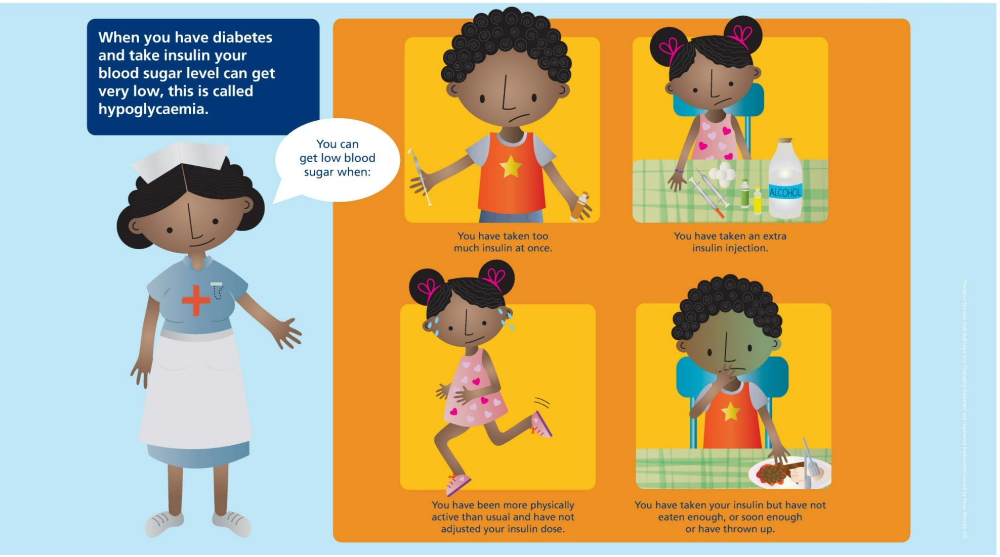
Poster 5 explains the relationship between insulin,
blood sugar levels, food and physical activity that
causes the child to experience low blood sugar
The main purpose of this poster is to establish an
understanding of how these factors affect each
other.
Key messages for the child:
Your blood sugar levels are affected by things
like physical activity, food and insulin.
Low blood sugar happens when the level of
sugar in your blood drops too low to give your
body energy.
Too much insulin at once, or an extra injection of insulin, can cause your blood sugar level to
drop and give you low blood sugar
Physical activity lowers the amount of insulin
your body needs to keep the blood sugar levels
steady. This means that higher levels of physical
activity than normal without adjusting your
insulin dose can cause your blood sugar level to
drop.
The balance between food and insulin is the
key to good diabetes control, and if you have
more or less of the one, you must adjust the
other accordingly.
Poster 6: How to treat low blood sugar (hypoglycaemia)
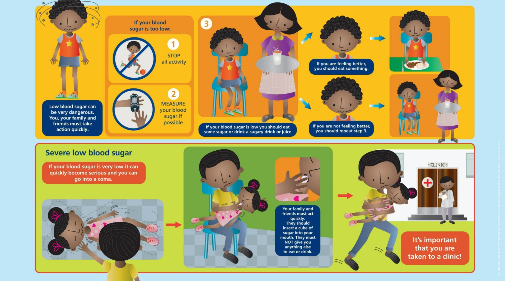
Poster 6 aims to empower the child and family/
caregiver to take action when they recognise low
blood sugar.
Key messages for the child:
Low blood sugar is common in children with
type 1 diabetes, so you should always be ready
to act.
If you think you have low blood sugar you
should:
Remain calm
Stop all physical activity
If possible, confirm that you have low blood
sugar by testing your blood sugar level with
the glucometer. If not possible, follow the
instructions on poster 6.
If your blood sugar is low you should have
something sugary to drink. Examples of
sugary drinks are: fruit juice, softdrink, milk
or water with sugar dissolved in it.
Wait a while to see if you start feeling
better
If you are feeling better eat some food.
If you are not feeling better you should
have another sugary drink.
Remember to test your blood sugar level
with your glucometer to see if it is still low
or if it is normal again.
Always carry a sugar cube or a hard candy with
you in-case you get low blood sugar while you
are away from home. Remember this sugar is
only for emergency and not for sharing with
your friends or eating unless you need it.
If you cannot get your blood sugar to rise
and continue to feel poorly you should ask
someone to contact your nurse or doctor
Poster 7: Some of the different types of insulin
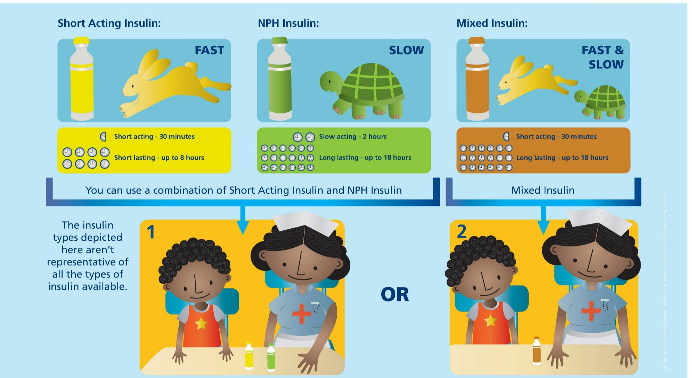
Poster 7 shows the 3 different types of insulin
available for treatment in the CDiC programme.
Use poster 7, together with poster 8, to explain
when and how much insulin the child should inject
per day.
Key messages for the child:
There are different types of insulin, and you
need to learn which type of insulin and how
much of each type to take at different times of
day
Some insulins work fast but last a short time,
while others take longer to work but last
longer
We will help you understand which insulin to
use when and how much to take. You should
be careful to follow the instructions we give
you.
Poster 8: How often should I inject insulin?
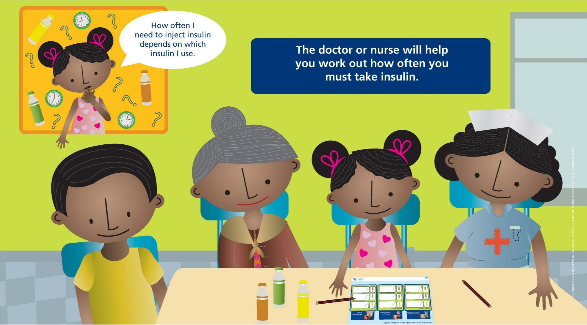
The child’s individual treatment regimen, a crucial
part of the conversation between nurse and child,
should be discussed with reference to poster 8.
Use this poster together with collectable card 8,
which is part of the handouts to be given to the
child and his/her caregiver at the 1st visit.
Key messages for the child:
You need to inject insulin 2 to 4 times a day,
typically in the morning when you wake-up, in
the early evening before your evening meal and
before you go to sleep.
The card we will give you shows you when
you must inject insulin, which insulin you must
inject and how many units you must inject.
With time, you will learn your insulin injection
schedule and it will become easier.
Half an hour after injecting insulin in the
morning you MUST eat breakfast.
Half an hour after injecting insulin in the
evening you MUST eat your evening meal
Do not delay eating or you may get low-blood
sugar.
Poster 9: Where should I inject insulin
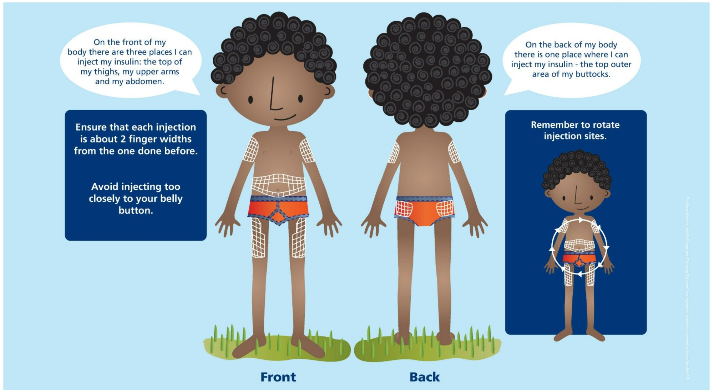
An essential message at this visit is where on
the body to inject insulin. This poster marks the
injections sites clearly, but a number of points still
need to be made in the conversation with the child
and his/her family/caregiver
Key messages for the child:
It is important to know where and how to
inject your insulin
There are 3 places on the front of your body
where you can inject insulin, these are:
the top of your thighs
your upper arms
your abdomen (around your stomach)
There is one place on the back of your body
where you can inject insulin, the top-outer area
of your buttocks.
You should avoid injecting insulin too close
to your belly button (navel) as this is a very
sensitive area.
You must not inject insulin in exactly the same
spot 2 times in a row. It is important to switch
between the different injection sites
The inside of the arms and thighs are NOT
recommended for injections.
Poster 10: What should I eat?
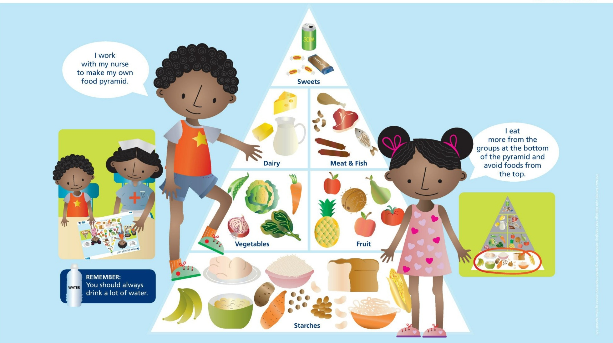
The relationship between food and insulin is very
important for managing diabetes. Poster 10 is
intended as an aid to talking about what the child
should eat.
Besides discussing food groups it is very important
to discuss quantities – particularly of starches,
which are often the food group most widely
available.
It is also recommended that you discuss how
different food groups affect the blood sugar and
the need for insulin
Many children have little influence over their
diet and the timing of their main meals, which is
decided mostly by their mothers or caregivers and
depending on what is available.
For that reason it is very important that not only
the child, but also the person responsible for the
meals, learns about the relationship between food
and insulin.
Key messages for the child:
What you eat is important, as it affects your
blood sugar level.
Some foods are better at keeping your blood
sugar level normal while others can give you
high blood sugar.
You should avoid too many sweets and things
like cake and it is important to plan your insulin
dose based on what you will be eating.
Remember to always drink a lot of water
Poster 11: Measuring my blood sugar
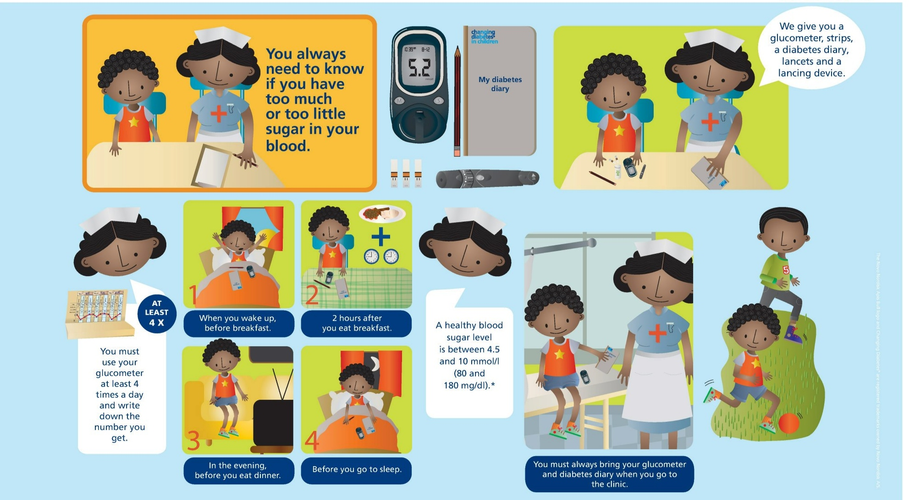
This poster asks the child to measure and write
down his/her blood glucose reading in his/
her diabetes diary at least four times a day. We
recognise that there may be other practices, but at
least four times is the recommendation
It is also important that the child understands why
it is necessary to write down the numbers and to
bring the book to the clinic. Not understanding
why they have to do this is one of the most
commonly heard explanations for why patients
don’t use their books.
Key message for the child:
You must use the blood glucose meter as your
nurse tells you to – including when you are not
sure if your blood sugar is too low or too high
You must write down in your diabetes diary the
result the glucometer shows. You must do this
each time you take a reading.
Writing down the numbers will help your
doctor and nurse see how well your treatment
is working and decide if it needs to be
changed.
You must always remember to take your
diabetes diary and your glucometer with you
when you go to the clinic.
Poster 12: How to use my glucometer
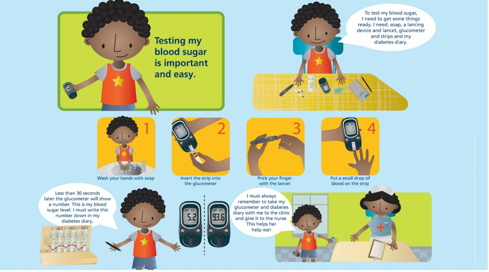
Poster 12 provides basic instructions on how
to use the glucometer. It is suggested that you
demonstrate the use of the glucometer for the
child and family/guardian.
Key messages for the child:
Besides the step-by-step instructions in this poster,
a number of additional points can be made, when
explaining how to use the glucometer:
Always wash your hands before using the
glucometer or drawing blood from your finger.
If you do not wash your hands the glucometer
can give you an incorrect number.
The index finger is not always the best finger to
use, because the small hole made by the lancet
will heal slower, as this finger is used a lot.
Do not use the same spot twice in a row to
draw blood - let the last hole heal before using
the same spot again.
The side of the fingertips sometimes heal more
quickly so it might be best to draw blood there.
Never try to use a strip more than once. It only
works once.
Look after your glucometer, do not lend it out
to your friends or family it is an important tool
for helping you manage your diabetes.
Poster 13: High blood sugar (hyperglycaemia) and how to recognise it
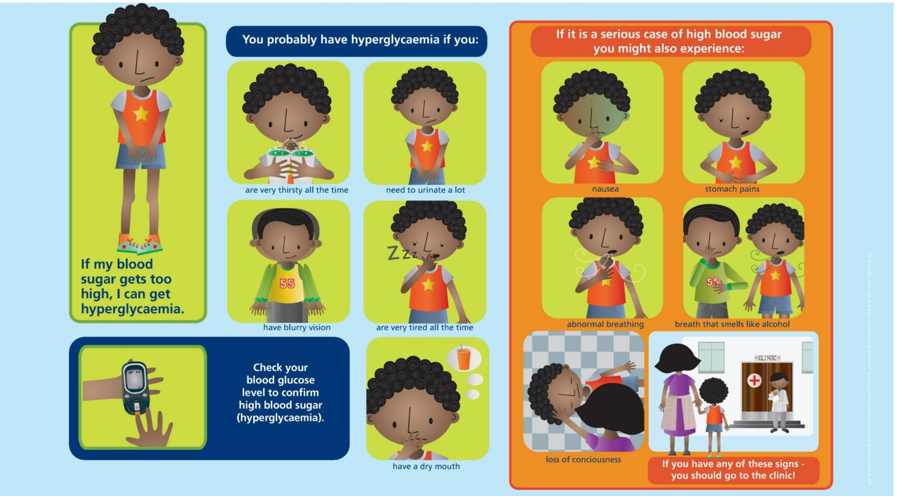
Poster 13 explains the signs and symptoms of high
blood sugar. We use the term high blood sugar
rather than hyperglycaemia, because it is easier
to understand. The child should learn the proper
term, but at the very beginning, it is important
to explain diabetes using simple and generally
understandable terms
When learning how to recognise hyperglycaemia
it is suggested that it is also stressed how the
symptoms differ from hypoglycaemia.
Key messages for the child:
High blood sugar can be a sign that your body
does not have enough insulin to unlock the
cells in your body and store energy.
High blood sugar is different from low blood sugar and you will experience different signs.
Remember to confirm high blood sugar by
using your glucometer.
Poster 14: Why do I get high blood sugar (hyperglycaemia)?
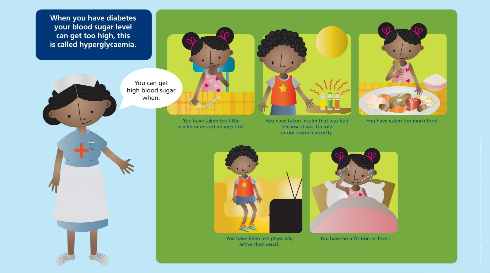
Poster 14 is intended to aid the same kind of
conversation as for Poster 5 on the relationship
between insulin, blood sugar levels, food and
physical activity – this time focusing on what
causes the child to experience high blood sugar
episodes.
The basic explanation for high blood sugar is that
if the level of insulin in the body gets too low, too
few cell doors are unlocked and too much blood
sugar is left in the blood.
The purpose of this poster is to establish an
understanding of how these factors depend on
each other and how they can lead to too high
blood sugar:
Key messages for the child:
You can get high blood sugar for different
reasons. These include: forgetting to take your
insulin injection, taking too little insulin or
taking insulin which is too old or has not been
stored correctly
It is important to remember to take your insulin
every day at the correct time, exactly as your
doctor/nurse has prescribed.
It is important for you to store your insulin
correctly. Do not leave it standing in the sun,
do not keep your insulin in your pocket when
you are running around or playing.
Do not use old insulin. If your insulin gets too
old, take it back to the clinic and get a new
vial.
Eating more than usual can effect your blood
glucose level - remember to increase your
insulin dose if you will be going to a party or
if you know that you will be eating more than
usual or eating sugary foods.
Physical activity lowers the amount of insulin
that your body needs to keep blood sugar
levels normal. But if you have high blood sugar
levels, physical activity is not recommended.
Lack of physical activity will increase the
amount of insulin your body needs. If you are
feeling ill or are just planning to relax for the
day you might need to increase your insulin
dose.
Poster 15: How to treat high blood sugar (hyperglycaemia)
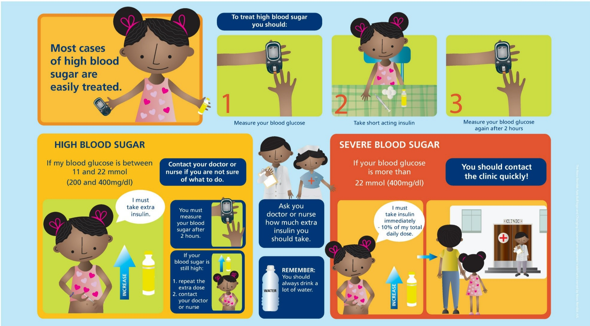
This poster provides information on how to treat
high blood sugar. The poster offers messages for
what to do in the case of high blood sugar and
severe high blood sugar. It is important for both
the child and the family to understand that most
cases of high blood sugar can be easily treated at
home if action is taken quickly.
Key messages for the child:
If you think your blood sugar is high, check
this by measuring your blood sugar with your
glucometer
You can reduce your blood sugar if it is high
by increasing your usual dose or by taking an
extra dose. Your nurse will explain how much
you need to increase your dose by
Remember to measure your blood sugar again
2 hours after you have taken an extra dose of
insulin.
If you cannot get you blood glucose level down
to a normal level you should contact your
doctor or nurse for advice.
If your blood glucose is very high (over 22
mmol/400mg/dl) you should inject 10% of
your daily dose and contact the clinic for
advice.
If you have high blood sugar, drink a lot of
water this will help your body get rid of the
extra sugar that it cannot store.
Poster 16: Taking care of my feet
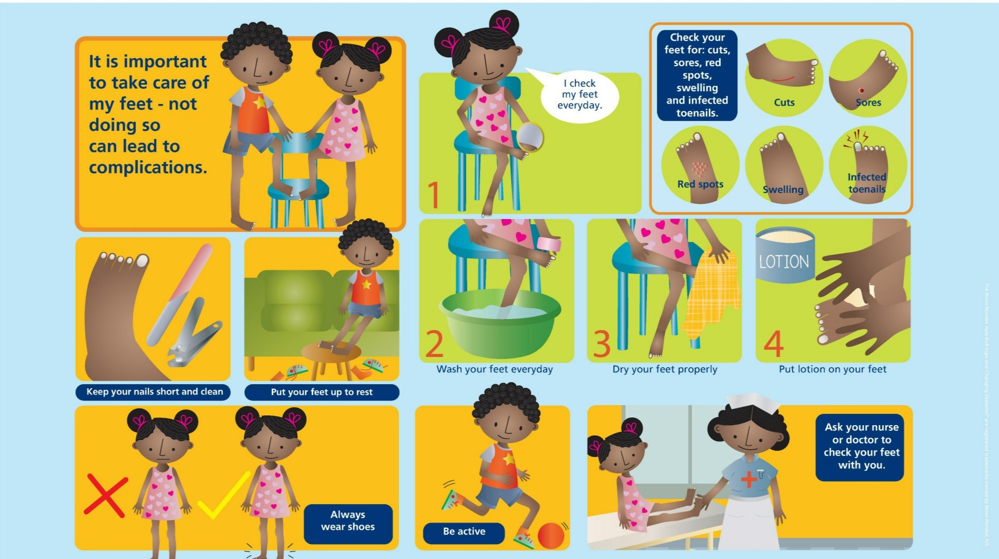
The reality of diabetes is that foot complications
and subsequent amputations are common. It is
not recommended to frighten the child with horror
stories of this but it is essential that the child
understands the importance of taking care of his/
her feet.
Poster 16 explains basic foot care. Some of the
steps in the poster may not be possible or relevant
for the children at your clinic. But your insight into
the life of a given child will help you decide how
relevant this subject may be. However, with more
than one million amputations every year due to
diabetes (globally) foot care is a key subject for
people living with diabetes.
Key messages for the child:
It is important for you to take care of your feet.
Not doing so can lead to complications.
You should follow the steps in poster 16 for
taking care of your feet and ask your nurse to
help you check your feet when you visit the
clinic.
It is important for you to keep your feet
protected by wearing sandals or shoes.
It is also important for you to be active. Being
active helps your body stay healthy and fit by
ensuring that blood and oxygen are circulated
to all parts of your body, including your feet.
Poster 17: Living with diabetes
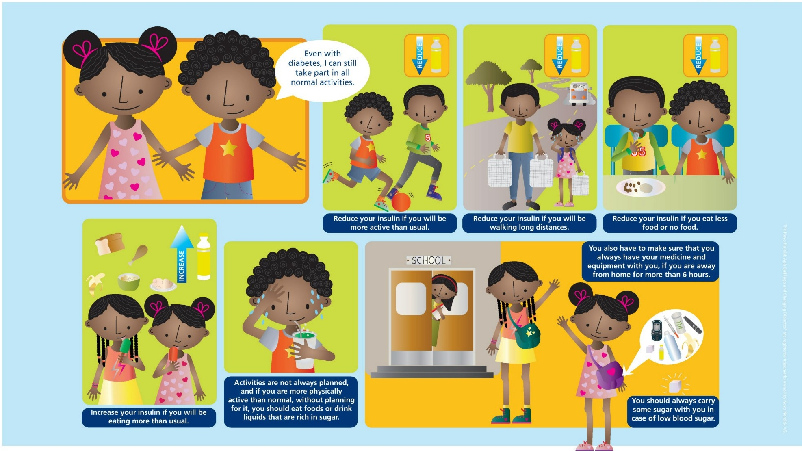
The reality of diabetes is that foot complications
and subsequent amputations are common. It is
not recommended to frighten the child with horror
stories of this but it is essential that the child
understands the importance of taking care of his/
her feet.
Poster 16 explains basic foot care. Some of the
steps in the poster may not be possible or relevant
for the children at your clinic. But your insight into
the life of a given child will help you decide how
relevant this subject may be. However, with more
than one million amputations every year due to
diabetes (globally) foot care is a key subject for
people living with diabetes.
Key messages for the child:
It is important for you to take care of your feet.
Not doing so can lead to complications
You should follow the steps in poster 16 for
taking care of your feet and ask your nurse to
help you check your feet when you visit the
clinic
It is important for you to keep your feet
protected by wearing sandals or shoes.
It is also important for you to be active. Being
active helps your body stay healthy and fit by
ensuring that blood and oxygen are circulated
to all parts of your body, including your feet.